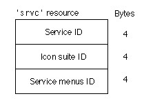

Service Resource
Figure 6-1 shows the format of the service resource,'srvc'. You use this resource to specify characteristics of a Cyberdog service. When a Cyberdog session is initialized, it creates a Cyberdog service for each'srvc'resource in your shared library.
This resource contains the following elements:
- Service ID. The service ID specifies the resource ID of a
'STR#'resource that contains strings describing the service. The strings in the'STR#'resource are specified in the following order:
- SOM class ID of the
CyberServicesubclass. This is required forCyberServicesubclasses.- User-readable name of the service. This is required for
CyberServicesubclasses.- URL Scheme supported by the service. This is required for
SimpleCyberServiceobjects.- Part kind of the service's Connect To panel. This is required for
SimpleCyberServiceobjects. This is an empty string if the service does not have a Connect To panel.- Part kind of the service's Preferences panel. This is required for
SimpleCyberServiceobjects. This is an empty string if the service does not have a Preferences panel.- SOM class ID of the
CyberItemsubclass for which this service will manufacture Cyberdog items. This is required forSimpleCyberServiceobjects.- Icon suite ID. The icon suite ID specifies the resource ID of the icon suite for the service. This is required for
SimpleCyberServiceobjects.- Service menus ID. The service menus ID specifies the resource ID of a
'STR#'resource that contains the menu item names for this service. This is required forSimpleCyberServiceobjects. This field is set to 0 if the service does not have any menu items.